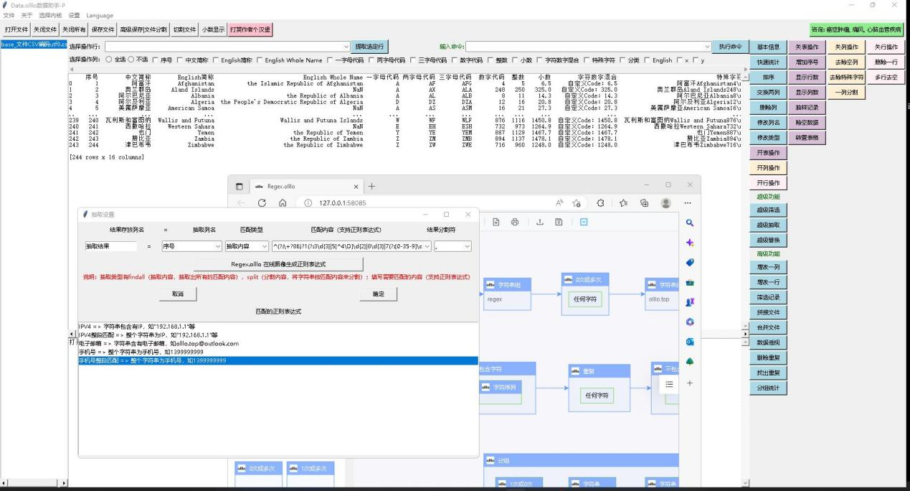
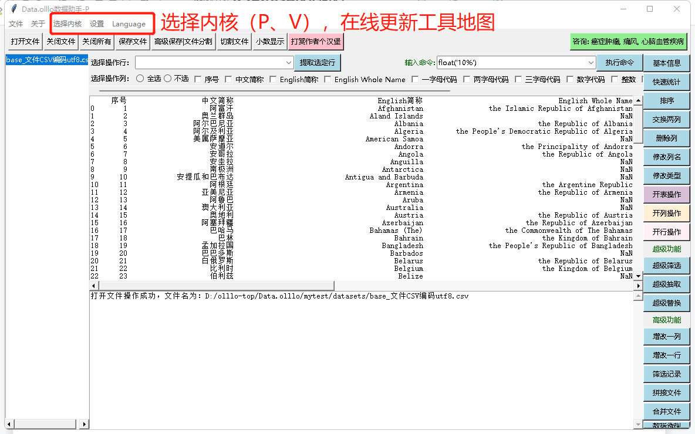
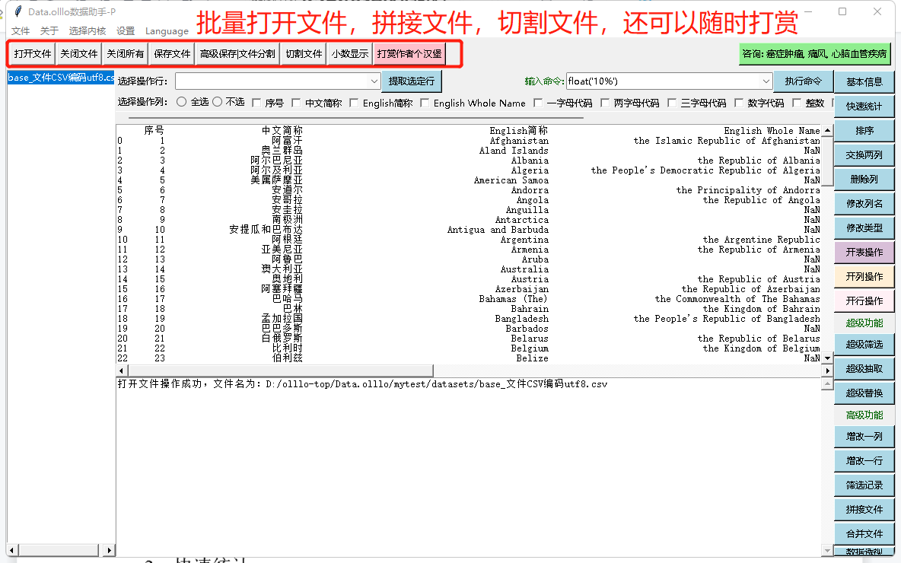
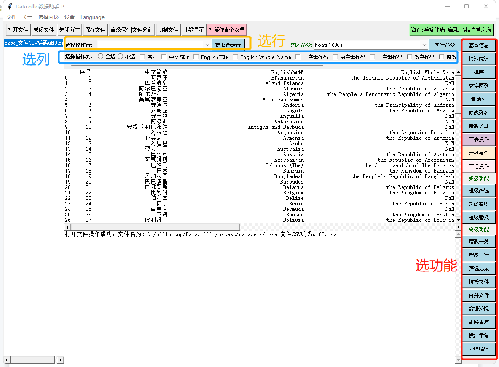
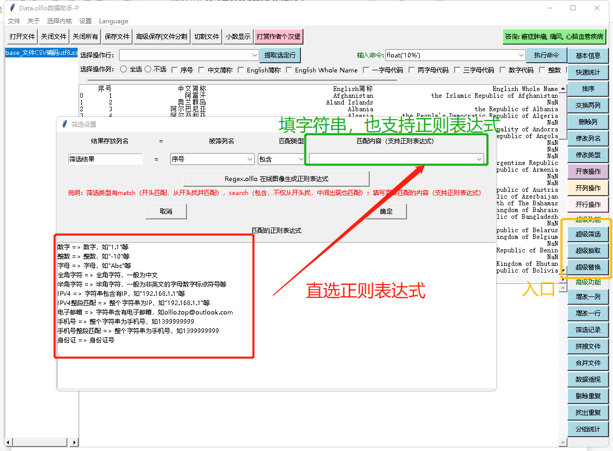
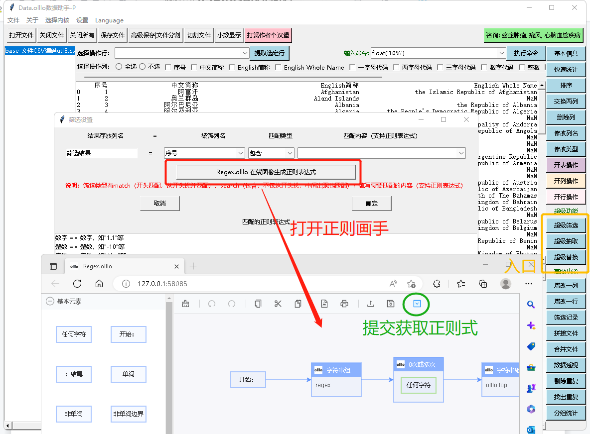
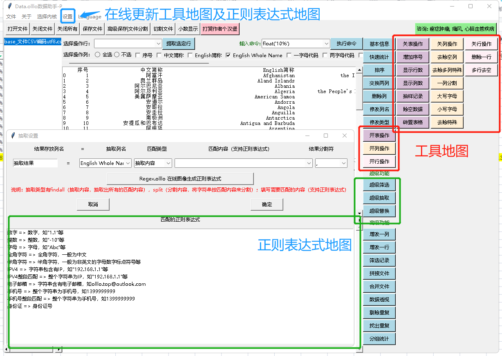

Data.olllo数据助手
Data.olllo数据助手，是世界上最好用的数据软件，现有两个内核（P核心和V核心），支持处理各类数据文件。

一、软件基础说明：
- 运行速度：快，很快，非常快。
- 数据文件类型：
- P核心
- 打开文件支持：csv，xlsx，xls，dbf，json，html，xml，剪贴板，h5，hdf5，hdf，feather，parquet，dta，sav，pkl，sas7bdat，xpt，sas，spss，table，gbq，fwf，orc；
- 保存文件支持：csv，xls，xlsx，pkl，剪贴板，json，html，xml，latex，h5，hdf5，hdf，feather，parquet，orc，dta；
- V核心
- 打开文件支持：csv，arrow， hdf5， parquet， feather， fits，ascii，json，xlsx，xls，dbf；
- 保存文件支持：arrow，hdf5，parquet，feather，fits，csv，xls，xlsx，json
理论上，P和V核心能够互通打开，可以先用一个核心打开，再存CSV之类的共享给另一个核心使用。
- 数据文件大小：大，很大，非常大都支持。Data.olllo数据助手P核心可以处理几千万到上亿的数据，若发现数据量实在太大，打不开，则使用V核心好了，支持超大的数据文件，要说有多大，就看你的磁盘有多大、文件有多大了~ 多大都支持。
- 支持文件编码：你有什么码？：）支持手动输入各种码，当然也有自动检测编码功能。
- 工具箱在线更新：支持在线更新工具箱，以及超级功能中的超级选项。

二、软件基础功能
- 打开各种类型文件：支持批量打开相同类型或者编码一致的各种类型的文件；
- 打开的同时拼接文件：V核心支持拼接多个文件并打开，即打开为一个文件（拼接了多个相同字段的文件）；P核心在打开多个文件以后，也可以使用功能键进行多文件拼接为一个文件。
- 保存为各种类型的文件，详看支持的类型。
- 分割保存文件：可以按照大小分割保存为多个文件，也可以按照关键字分割保存为多个文件。
- 文件分割：P核心由于打开的文件大小不如V核心的大，所以支持不打开文件而直接分割。
- 显示行数、列数：可以选择显示的行数和列数，方便查看。
- 关闭文件：不保存就关闭文件，支持批量关闭。
- 还有一个特别的基础功能，就是可以随时打开二维码打赏作者。：）

三、软件数据处理功能
- 灵活的选择集：全选、不选、行选、列选；
- 基础信息：显示数据集的基础信息；
- 快速统计：快速统计数据集的最大、最小、平均等；
- 快速排序：支持一列、多列排序，按照列的先后顺序，若需要改变顺序，先使用交换两列功能；
- 交换两列功能：选定两列来交换顺序；
- 删除行、删除列：删除选定行、列
- 修改列名、修改列的类型（字符串、整数、小数）
- 编辑一行或者插入一行：编辑或插入一行
- 编辑一列或新增一列：编辑一行或新增一列（支持数据类型的+、-、*、/的多则运算，也支持字符串类型的+运算），试试你就知道了。
- 筛选记录（行）：支持数据类型或字符串类型的 “等于、不等于、大于、小于、大于等于、小于等于的筛选规则。
- 拼接文件：多个文件竖着拼；
- 合并文件：两个文件横着拼，按照关键字，其中P核心要求关键字的名称相同（不同就先使用修改列名改相同），V核心对关键字没有要求，但是不允许两张合并的数据表有名称相同的字段（先使用修改列名的功能改改列名好了）。
- 数据透视：和透视图一样，选择列是什么，行是什么，看什么内容，看什么类型（总数，均数等，可以一起看），然后就透视了；当然也选列不选横，一样可以透视。
- 剔除重复：就是提出哪些完全重复的数据，可以选保留或不保留，保留第一个或最后一个。
- 找出重复：就是找出重复。
- 分组统计：已关键字分类统计出来的总数，平均数，最大，最小。

四、软件超级数据处理功能
不得不说的超级功能，包括超级筛选、超级抽取、超级替换；所谓的超级，就是超级，支持普通的字符串，也支持规则描述方法（正则表达式）；对于正则表达式，提供了一个画图出表达式的功能，方便不想学正则表达式又想用的人使用。
有了这个超级功能，什么查找呀，筛选啊，过滤呀，替换啊，匹配呀，选择内容啊，等等，等等等，都可以搞定。

- 超级筛选：可以对选择的列进行筛选，筛选的结果存在本数据表的一个新字段中；比如说，希望在某一类中看看有没有手机号码，那就选定手机号正则表达式，然后确定，结果就存下来了，结果为True的，则说明有手机号，为False的则说明没有手机号，这时候想整个提取出来，使用 “筛选记录”功能来判断等于True或者等于False，就可以了。
- 超级抽取：可以对选择的列进行内容抽取，结果存在本数据表的一个新字段中；比如说抽取某一字段列的手机号，那就选定手机号正则表达式，然后确定，结果就抽取到新的列了（你可以命名）。
- 超级抽取中，也可以用内容作为分割；比如说一个字段，我想用数字来进行分割（数字不一样），那就选择超级抽取里面的分割内容，然后选定数字正则表达式，确定后，就可以得到新列，存有分割的内容了。
- 超级替换：可以将匹配的内容替换成你想要的；比如说，想将手机号替换为139xxxxxx，那么就选定列，然后选定手机正则表达式，填写替换内容为 “139xxxxxx”，再确定，替换结果就存在新的一列中，找找看。
- 超级功能里面还集成了图形生成正则表达式，里面有例子，看看试试就明白了，Regex.olllo正则画手也是olllo系列的一个有趣的应用。

五、软件命令模式
软件是Python来开发的，支持Python语句，所在的数据表为df，如果你懂编程，可以在上面直接进行语句编写，然后执行。在上面看看语句的例子，你很快就明白了。
命令模式什么都可以做，因为就是编程嘛。
六、在线工具地图和在线正则表达式地图
工具地图和正则表达式地图会时不时更新，需要手工更新下，功能会增多点。

七、软件价格
价格就是不要价格，随意使用，要是你高兴，就大方的打赏下，鼓励下，赞助下；作者希望做一个免费使用的好用的领先的不停进取的工具，赞赏欣赏打赏就会有动力，做得更好更妙更顶呱呱。
olllo团队于2023年2月